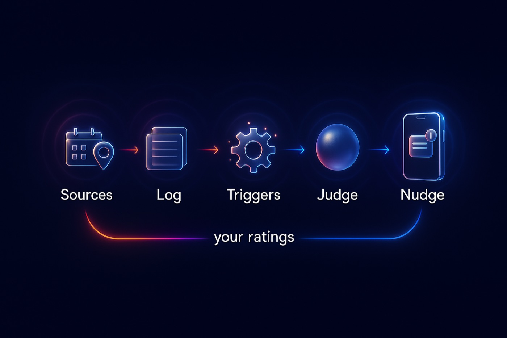
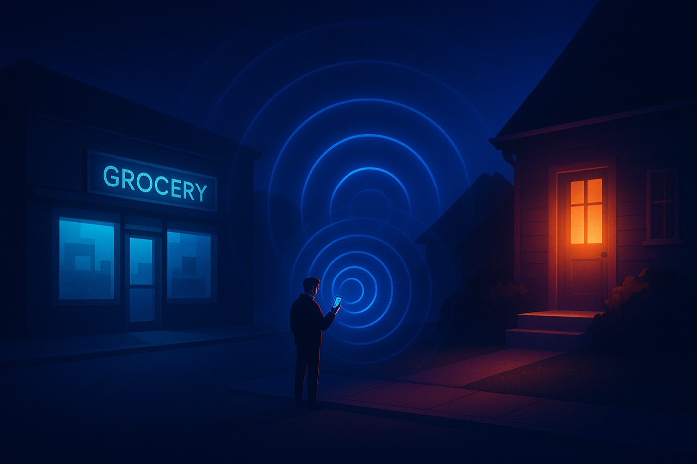
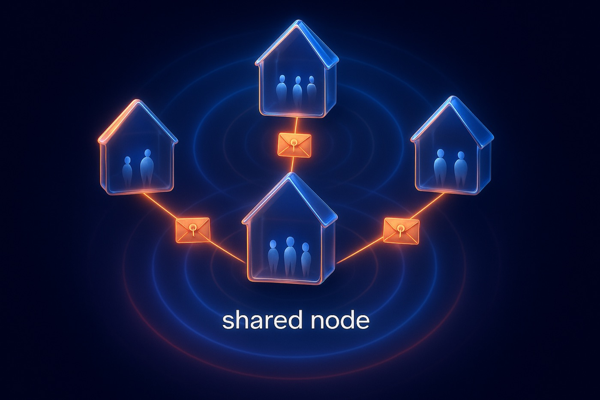

Same party
Sam also RSVP'd to the Dolores Park picnic on Saturday. Want to go together?
From your Partiful and Luma confirmation emails
opportune quietly watches your calendar, your RSVPs and where you are. When hanging out with someone you like would cost almost nothing, it taps you on the shoulder. Otherwise it stays out of your way.
What am I already doing that would be better with other people, at almost no cost to them? Whose plans could I join, at almost no cost to me?
You're at the grocery store. Rosa is home a block away and her porchlight is on until 8.
Some of these work the day you sign up, using only your own data. The rest switch on the moment one friend joins.
Sam also RSVP'd to the Dolores Park picnic on Saturday. Want to go together?
Priya is a 4 minute walk from you and neither of you has anything on for an hour.
That ceramics night you RSVP'd to looks like Rosa's kind of thing. Invite her?
Say when you're happy to have people drop in. Friends nearby get a gentle heads-up, and your agent can say yes for you.
You and Rosa are both free most Thursday evenings. Make it a dinner?
I asked 6 friends' agents. Two are likely free after 7, one's already in your neighborhood.
This isn't a meet-strangers app. You mark the friends you'd like to see more of, and it only ever looks for chances with them.
"Usually free Thursdays. Loves anything with pottery or live jazz."
Plain rules spot the overlap. An AI judge then decides whether it's worth interrupting you, and every decision is logged so you can correct it.

Every choice it makes is on the record, including the times it stayed quiet. A daily digest lists what it skipped. Rate any call good or bad and it adjusts, per friend.
After you've said yes to a friend's drop-in a few times, it offers to start saying yes for you. Trust builds up from small things you've already approved.
I stayed quiet about 3 things yesterday.
On day one it reads your own RSVPs, calendar and location. When it finds a friend you'd like to see more of, it hands you an invite link for them.
Once they join, your agents can compare notes privately: "is she free Thursday?" gets an answer without either of you sharing your whole calendar.

With porchlight, she's already said evenings are open. Her agent sees you're a block away, says "likely yes", and gives her a few minutes to veto. You get a nudge while you're still in the checkout line.
Every person has an agent that can answer questions from friends' agents, limited to what that friend is allowed to know. It works the same on one shared server or between servers run by different people.
# Dev's agent asks Rosa's, signed with Dev's key POST https://rosa.example/q { "kind": "dropin", "text": "Dev is a block away. OK if she stops by?", "window": "now → 19:30" } # Rosa's agent answers under Rosa's policy { "answer": "likely", "text": "She's home and her porchlight is on until 8.", "revealed": { "porchlight": "open" } }

The protocol is open and every node speaks it. Run a node on a spare box for you and your housemates, and your agents still talk to everyone on the shared server.
Sources, triggers, channels and question types are all plugins: one folder each. If you want opportune to read your climbing gym check-ins, you can add that tonight.
Easiest with an invite from a friend who's already on. Without one, you still get the solo features from day one.
Node 24 and SQLite. Bring an Anthropic key for the judge and a Telegram bot token for nudges.
git clone https://github.com/malcolmocean/opportune cd opportune && pnpm install cp .env.example .env # keys + NODE_URL pnpm start
Your node publishes what it supports at /.well-known/opportune, so other nodes know what they can ask it.